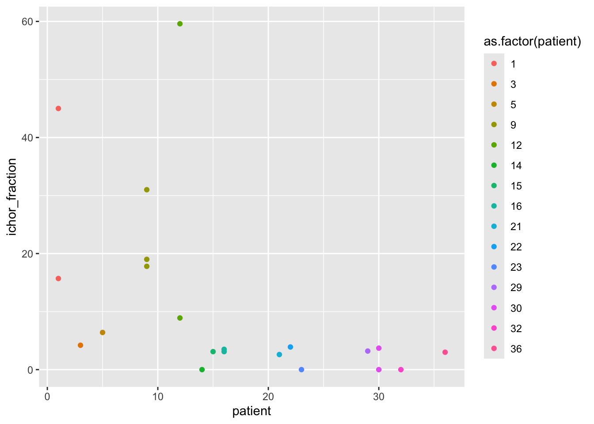
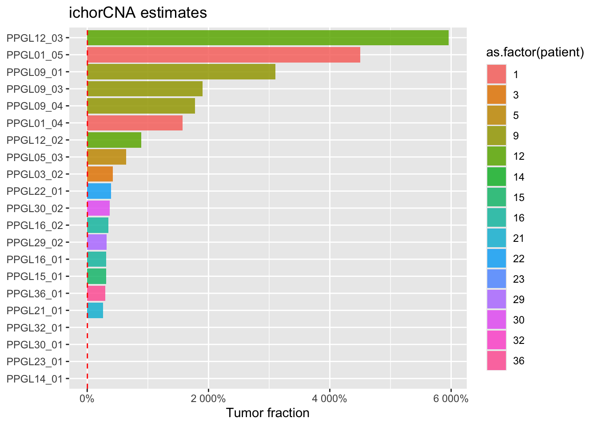

Last updated: 2026-10-07
Checks: 7 0
Knit directory: 3_cf_nano/analysis/
This reproducible R Markdown analysis was created with workflowr (version 1.7.2). The Checks tab describes the reproducibility checks that were applied when the results were created. The Past versions tab lists the development history.
Great! Since the R Markdown file has been committed to the Git repository, you know the exact version of the code that produced these results.
Great job! The global environment was empty. Objects defined in the global environment can affect the analysis in your R Markdown file in unknown ways. For reproduciblity it’s best to always run the code in an empty environment.
The command set.seed(20250606) was run prior to running
the code in the R Markdown file. Setting a seed ensures that any results
that rely on randomness, e.g. subsampling or permutations, are
reproducible.
Great job! Recording the operating system, R version, and package versions is critical for reproducibility.
Nice! There were no cached chunks for this analysis, so you can be confident that you successfully produced the results during this run.
Great job! Using relative paths to the files within your workflowr project makes it easier to run your code on other machines.
Great! You are using Git for version control. Tracking code development and connecting the code version to the results is critical for reproducibility.
The results in this page were generated with repository version 40362fa. See the Past versions tab to see a history of the changes made to the R Markdown and HTML files.
Note that you need to be careful to ensure that all relevant files for
the analysis have been committed to Git prior to generating the results
(you can use wflow_publish or
wflow_git_commit). workflowr only checks the R Markdown
file, but you know if there are other scripts or data files that it
depends on. Below is the status of the Git repository when the results
were generated:
Ignored files:
Ignored: .DS_Store
Ignored: .Rhistory
Ignored: .Rproj.user/
Ignored: analysis/.DS_Store
Ignored: analysis/claude_log/
Ignored: data/atlas/
Ignored: data/cfnano_paper/
Ignored: data/ncbi_dataset/
Ignored: data/rrbs/
Ignored: data/ruining_twist/
Ignored: other_people_code/
Ignored: output/bedtools/
Ignored: output/biscuit/
Ignored: output/cluster_files/
Ignored: output/html docs - versions/
Ignored: output/modkit/
Ignored: output/nanoplot/
Ignored: output/poster_plots/
Ignored: output/research_sprint/
Ignored: output/samtools/
Ignored: output/schematics/
Ignored: output/tothill_data/
Ignored: output/wgbs_tools_ref/
Ignored: renv.lock
Ignored: renv/
Untracked files:
Untracked: analysis/messAroundLocal.Rmd
Untracked: analysis/posterPlots.Rmd
Unstaged changes:
Modified: .Rprofile
Modified: .gitignore
Modified: 3_cf_nano.Rproj
Modified: _workflowr.yml
Modified: analysis/01a_bedFileCorrelation.Rmd
Note that any generated files, e.g. HTML, png, CSS, etc., are not included in this status report because it is ok for generated content to have uncommitted changes.
These are the previous versions of the repository in which changes were
made to the R Markdown (analysis/00_ObtainData.Rmd) and
HTML (docs/00_ObtainData.html) files. If you’ve configured
a remote Git repository (see ?wflow_git_remote), click on
the hyperlinks in the table below to view the files as they were in that
past version.
| File | Version | Author | Date | Message |
|---|---|---|---|---|
| html | 40362fa | Caitlin Page | 2026-10-07 | Build site. |
| Rmd | cfab95a | Caitlin Page | 2026-10-07 | wflow_publish("analysis/00_ObtainData.Rmd") |
| html | 988b318 | Caitlin Page | 2026-10-07 | Build site. |
| Rmd | b59aa41 | Caitlin Page | 2026-10-07 | wflow_publish("analysis/00_ObtainData.Rmd") |
| Rmd | 8580eb0 | Caitlin Page | 2026-09-02 | tidy |
| Rmd | f77a431 | caitlinpage | 2026-02-20 | details of another sample |
| html | f20f068 | caitlinpage | 2025-11-07 | Build site. |
| Rmd | 4917c1f | caitlinpage | 2025-11-07 | wflow_publish("analysis/00_ObtainData.Rmd") |
| Rmd | 2b9e16e | caitlinpage | 2025-08-28 | update of tf |
| Rmd | 77733c9 | caitlinpage | 2025-08-19 | update with samples |
| html | 59166fd | caitlinpage | 2025-08-15 | Build site. |
| Rmd | 1b7294c | Caitlin Page | 2025-07-10 | document where data is coming from - first is nanopore cf |
This file describes the datasets used in this project. They span different technologies and biology, and have come from different sources.
encode rrbs fastqs avail * has 13 rrbs data sets
GM12878 cell line * hg19 * lymphoblastoid cell line * single-end * 2 technical replicates
K562 cell line * hg19 * erythroleukaemia cell line * patient with CML - chronic myeloid leukaemia * bcr-abl1 positive * 2 technical replicates
Processing details of fastq files can be found [here]
Used for: * Developing data structures * Developing differential approach Advantages: * Short read lengths (fast to process and analyse) Disadvantages: * 2 replicates limits analysis (3 is more robust) * can’t do false positive testing * reads are extremely short which is unrealistic
Data provided by Richard Tothill lab Melb Uni 7 healthy samples * 21 cancer samples
Processing details of fastq files can be found [here]
Used for: * Evaluating differential alpha method Advantages: * Enough samples for robust analysis and false positives Disadvantages: * Massive files - more time to load and analyse
df <- read.csv("../data/PPGL_twist_annotated.csv")
df lib_ID sample_id patient sample_no age sex tissue
1 LPRJ230221 PPGL01_04 1 4 52 M phaeochromocytoma
2 LPRJ230222 PPGL01_05 1 5 52 M phaeochromocytoma
3 LPRJ230459 PPGL03_02 3 2 71 F phaeochromocytoma
4 LPRJ241031 PPGL05_03 5 3 80 M phaeochromocytoma
5 LPRJ230223 PPGL09_01 9 1 45 M phaeochromocytoma
6 LPRJ230224 PPGL09_03 9 3 45 M phaeochromocytoma
7 LPRJ230225 PPGL09_04 9 4 45 M phaeochromocytoma
8 LPRJ230456 PPGL12_02 12 2 68 M phaeochromocytoma
9 LPRJ241035 PPGL12_03 12 3 68 M phaeochromocytoma
10 LPRJ240791 PPGL14_01 14 1 72 F HN_paraganglioma
11 LPRJ230457 PPGL15_01 15 1 88 M phaeochromocytoma
12 LPRJ230455 PPGL16_01 16 1 46 M phaeochromocytoma
13 LPRJ241033 PPGL16_02 16 2 46 M phaeochromocytoma
14 LPRJ230458 PPGL21_01 21 1 76 M phaeochromocytoma
15 LPRJ230460 PPGL22_01 22 1 80 M HN_paraganglioma
16 LPRJ230454 PPGL23_01 23 1 61 F HN_paraganglioma
17 LPRJ241032 PPGL29_02 29 2 62 M AP_paraganglioma
18 LPRJ240790 PPGL30_01 30 1 79 F HN_paraganglioma
19 LPRJ241030 PPGL30_02 30 2 79 F HN_paraganglioma
20 LPRJ240792 PPGL32_01 32 1 56 F HN_paraganglioma
21 LPRJ241034 PPGL36_01 36 1 38 M AP_paraganglioma
genotype ichor_fraction
1 SDHB 15.7
2 SDHB 45.0
3 unknown_tested 4.2
4 unknown_tested 6.4
5 unknown_tested 31.0
6 unknown_tested 19.0
7 unknown_tested 17.8
8 RET 8.9
9 RET 59.6
10 SDHD 0.0
11 unknown_tested 3.1
12 SDHB 3.1
13 SDHB 3.5
14 SDHB 2.6
15 unknown_tested 3.9
16 SDHD 0.0
17 CCND1_amp 3.2
18 SDHD 0.0
19 SDHD 3.7
20 SDHD 0.0
21 SDHA 3.0library(dplyr)Warning: package 'dplyr' was built under R version 4.4.3
Attaching package: 'dplyr'The following objects are masked from 'package:stats':
filter, lagThe following objects are masked from 'package:base':
intersect, setdiff, setequal, unionlibrary(ggplot2)Warning: package 'ggplot2' was built under R version 4.4.3df %>% group_by(patient) %>% summarise(n_samples = n()) %>% t() [,1] [,2] [,3] [,4] [,5] [,6] [,7] [,8] [,9] [,10] [,11] [,12] [,13]
patient 1 3 5 9 12 14 15 16 21 22 23 29 30
n_samples 2 1 1 3 2 1 1 2 1 1 1 1 2
[,14] [,15]
patient 32 36
n_samples 1 1df %>% distinct(patient, sex) %>% t() [,1] [,2] [,3] [,4] [,5] [,6] [,7] [,8] [,9] [,10] [,11] [,12] [,13]
patient " 1" " 3" " 5" " 9" "12" "14" "15" "16" "21" "22" "23" "29" "30"
sex "M" "F" "M" "M" "M" "F" "M" "M" "M" "M" "F" "M" "F"
[,14] [,15]
patient "32" "36"
sex "F" "M" df %>% distinct(patient, tissue) %>% t() [,1] [,2] [,3]
patient " 1" " 3" " 5"
tissue "phaeochromocytoma" "phaeochromocytoma" "phaeochromocytoma"
[,4] [,5] [,6]
patient " 9" "12" "14"
tissue "phaeochromocytoma" "phaeochromocytoma" "HN_paraganglioma"
[,7] [,8] [,9]
patient "15" "16" "21"
tissue "phaeochromocytoma" "phaeochromocytoma" "phaeochromocytoma"
[,10] [,11] [,12]
patient "22" "23" "29"
tissue "HN_paraganglioma" "HN_paraganglioma" "AP_paraganglioma"
[,13] [,14] [,15]
patient "30" "32" "36"
tissue "HN_paraganglioma" "HN_paraganglioma" "AP_paraganglioma"df %>% distinct(patient, genotype) %>% t() [,1] [,2] [,3] [,4] [,5] [,6]
patient " 1" " 3" " 5" " 9" "12" "14"
genotype "SDHB" "unknown_tested" "unknown_tested" "unknown_tested" "RET" "SDHD"
[,7] [,8] [,9] [,10] [,11] [,12]
patient "15" "16" "21" "22" "23" "29"
genotype "unknown_tested" "SDHB" "SDHB" "unknown_tested" "SDHD" "CCND1_amp"
[,13] [,14] [,15]
patient "30" "32" "36"
genotype "SDHD" "SDHD" "SDHA"df %>%
ggplot(aes(x = reorder(sample_id, ichor_fraction),
y = ichor_fraction, fill = as.factor(patient))) +
geom_col(alpha = 0.85) +
# geom_errorbar(aes(ymin = tf_lower, ymax = tf_upper), width = 0.3) +
geom_hline(yintercept = 0.03, linetype = "dashed", colour = "red") + # detection threshold
coord_flip() +
labs(x = NULL, y = "Tumor fraction (%)", title = "ichorCNA estimates")
df %>% ggplot(aes(x = sample_no, y = ichor_fraction, group = patient)) +
geom_line(colour = "grey70", linewidth = 0.7) +
geom_point(aes(colour = as.factor(patient)), size = 3) +
geom_hline(yintercept = 0.03, linetype = "dashed", colour = "red", linewidth = 0.5) +
scale_x_continuous(breaks = sort(unique(df$sample_no))) +
labs(x = "Sample", y = "Tumor fraction (%)", colour = "Patient") +
theme_bw() +
theme(legend.position = "right")
Paper: Detecting cell-of-origin and cancer-specific methylation features of cell-free DNA from Nanopore sequencing Data: * Zenodo * GEO Zenodo is the method recommended by the authors
Samples: 13 files: (main one - epiread format) hu5.10
Healthy samples * hu5.10 * hu5.11 * hu5.12 * ispro.bc2 * ispro.bc3 * ispro.bc4 * ispro.bc5
LUAD cancer samples * ispro.s1 * ispro.bc1 * ispro.bc8 * ispro.bc9 * ispro.bc10 * ispro.bc11
bc8 and bc9 have the lowest tumour fraction of the samples bc10 and bc11 have the highest tumour fraction
Paper: Epigenomic reprogramming during pancreatic cancer progression links anabolic glucose metabolism to distant metastasis GEO has 19 samples * 4 individuals, diff replicates and situations * processed with hg19
with bams available to download through SRA toolkit
downloading 4 samples via tmux and file transfer server all from sample A_38 Lg is lung metastasis Per is peritoneal metastasis
SRR1646792: Lg rep 1
SRR1646793: Lg rep 2
SRR1646794: Per rep 1
SRR1646795: Per rep 2
oops there’s 2 more for this sample: 2 liver metastasis: SRR3427332, SRR3427334
also all of these are massive files 2 fastqs each, 93 is 51.8gb per fastq
Steps to process FastQs processing method * 100 base pair seq * BSmooth for alignment * Bowtie2 for alignment (says this immediately after saying using BSmooth for alignment) ** BSmooth offers 2 options for alignment - 1 of them uses bowtie (so that’s what the paper used) * and the lambda phage genome (hold on this is all supposed to be human) * got meth measurement for each CpG * filtering: mapping qual < 20, nuc base qual at cyt position < 10 * filtering: removed meas from 5’ most 10nt of both paired reads * DMRs: bsseq * DMRs: >= 3 reads per CpG * DMRs: small: smooth window 20 CpGs, 1kb used, t stat 4.6, meth diff > 20% * DMRs: big: smooth window 200 CpGs, 10kbp, t stat 2, meth diff > 10%, length dmr > 5kb
WHAT I DID: * bismark Bismark steps steps
Z: methylation z: unmethylated source
roadmap epigenome * still need to do some digging to find the files * the paper data is used in the BSmooth paper GEO paper 2009
https://sites.broadinstitute.org/ccle/datasets https://depmap.org/portal/data_page/?tab=allData promoter data
raw data * fastq files
paper * fastqs on request
Genome-scale DNA methylome and transcriptome profiling of human neutrophils paper GEO * potentially 13 samples * GSE table files
sessionInfo()R version 4.4.2 (2024-10-31)
Platform: aarch64-apple-darwin20
Running under: macOS Sequoia 15.7.9
Matrix products: default
BLAS: /Library/Frameworks/R.framework/Versions/4.4-arm64/Resources/lib/libRblas.0.dylib
LAPACK: /Library/Frameworks/R.framework/Versions/4.4-arm64/Resources/lib/libRlapack.dylib; LAPACK version 3.12.0
locale:
[1] en_US.UTF-8/en_US.UTF-8/en_US.UTF-8/C/en_US.UTF-8/en_US.UTF-8
time zone: Australia/Melbourne
tzcode source: internal
attached base packages:
[1] stats graphics grDevices datasets utils methods base
other attached packages:
[1] ggplot2_4.0.2 dplyr_1.2.0 workflowr_1.7.2
loaded via a namespace (and not attached):
[1] sass_0.4.10 generics_0.1.4 renv_1.1.8
[4] stringi_1.8.7 digest_0.6.39 magrittr_2.0.4
[7] evaluate_1.0.5 grid_4.4.2 RColorBrewer_1.1-3
[10] fastmap_1.2.0 rprojroot_2.1.1 jsonlite_2.0.0
[13] processx_3.8.6 whisker_0.4.1 ps_1.9.1
[16] promises_1.5.0 BiocManager_1.30.27 httr_1.4.8
[19] scales_1.4.0 jquerylib_0.1.4 cli_3.6.5
[22] rlang_1.1.7 withr_3.0.2 cachem_1.1.0
[25] yaml_2.3.12 otel_0.2.0 tools_4.4.2
[28] httpuv_1.6.17 vctrs_0.7.2 R6_2.6.1
[31] lifecycle_1.0.5 git2r_0.36.2 stringr_1.6.0
[34] fs_1.6.7 pkgconfig_2.0.3 callr_3.7.6
[37] pillar_1.11.1 bslib_0.10.0 later_1.4.8
[40] gtable_0.3.6 glue_1.8.0 Rcpp_1.1.1
[43] xfun_0.57 tibble_3.3.1 tidyselect_1.2.1
[46] rstudioapi_0.18.0 knitr_1.51 dichromat_2.0-0.1
[49] farver_2.1.2 htmltools_0.5.9 rmarkdown_2.30
[52] labeling_0.4.3 compiler_4.4.2 getPass_0.2-4
[55] S7_0.2.1